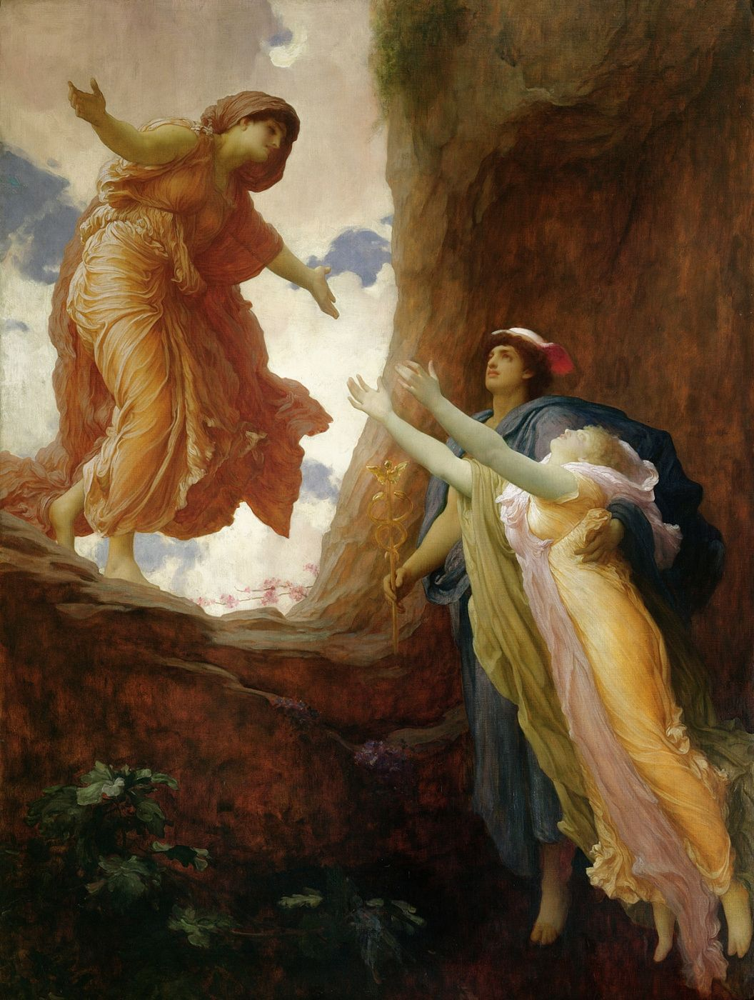

.jpg){kind=link}
I
Anne ile kız arasındaki sorunlar, çoğu zaman, birbirine zıt görünen iki şikâyetle dile gelir. Biri yakınlıktan şikâyettir: Annem her şeye karışıyor, beni hâlâ çocuk yerine koyuyor, kendi hayatımı yaşamama izin vermiyor, onun yanında kendimi kaybediyorum. Öbürü uzaklıktan şikâyettir: Annem beni hiç anlamadı, bana hiç sevgisini göstermedi, ondan istediğimi hiçbir zaman alamadım. Şaşırtıcı olan, bu iki şikâyetin çoğu zaman aynı kişide, aynı ilişki için, birlikte bulunmasıdır. Annesinden kurtulmak isteyen kız, aynı anda, ondan hâlâ bir şey bekler.
Psikanaliz, bu çelişkinin bir kişilik sorunu ya da bir iletişim bozukluğu olmadığını, anne ile kız arasındaki bağın yapısından geldiğini gösterir. Bu yapıyı anlamak, ne anneyi suçlamayı ne de kızı suçlamayı gerektirir. Anlamak, ikisinin de, kendi isteklerinin ötesinde, bir şeyin içinde yakalandığını görmektir.
II
Freud, kadın cinselliği üzerine düşüncesini uzun süre erkek çocuğun gelişimini model alarak kurdu. Ama 1931’de yayımladığı “Kadın Cinselliği Üzerine” yazısında, kendi kuramının büyük bir eksikliğini fark ettiğini yazdı. Kız çocuğun babaya yönelmesinden önce, uzun ve yoğun bir dönem boyunca anneye bağlı olduğunu, ve bu ilk bağlılığın, sonraki bütün ilişkilerini belirlediğini gördü. Freud bu keşfi, arkeolojiden aldığı bir imgeyle anlattı: Bu evrenin keşfi, Yunan uygarlığının ardında Minos-Miken uygarlığının bulunması gibi bir şaşkınlık yaratmıştı.1
Freud, iki yıl sonra yazdığı “Kadınlık” dersinde, kızın anneden uzaklaşmasının çoğu zaman yumuşak bir geçiş olmadığını, düşmanlıkla, sitemle, hayal kırıklığıyla dolu olduğunu ekledi. Kız, annesini, kendisine yeterince süt vermediği, yeterince sevmediği, kardeşlerini ona tercih ettiği için suçlar.2 Freud bu sitemlerin ardında daha derin bir şey görüyordu: kızın annesinden, ona veremeyeceği bir şeyi beklemesi. Bu “şey”in ne olduğu, Freud’dan sonra psikanalizin en çok tartıştığı sorulardan biri oldu.
III
Lacan bu soruya, 1972’de yazdığı yoğun bir metinde, sert bir kelimeyle yanıt verdi. Anne ile kız arasındaki ilişkiyi, çoğu kadın için bir “yıkım” (ravage) olarak tanımladı; kız, Lacan’a göre, kadın olarak annesinden, babasından beklediğinden daha fazla öz, daha fazla varlık bekler gibidir.3 Bu cümleyi anlamak için, Lacan’ın kadınlık üzerine söylediği başka bir şeyi hatırlamak gerekir: Kadını bir bütün olarak, bir tümel olarak tanımlayan bir gösteren yoktur. Bir erkek çocuk, erkek olmanın ne demek olduğunu, babanın, yasanın, fallik işlevin ona sunduğu bir modelden öğrenebilir; bir kız çocuk için ise “kadın olmak nedir?” sorusunun böyle hazır bir yanıtı yoktur.4
Kız, bu sorunun yanıtını, ilk olarak annesinden bekler. Annesi bir kadındır; o halde kadın olmanın sırrını o biliyor olmalıdır. Ama anne bu sırrı veremez, çünkü kendisi de ona sahip değildir; o da kendi annesinden aynı şeyi beklemiş ve alamamıştır. Lacan’ın “yıkım” dediği şey, bu karşılanmamış beklentinin bıraktığı izdir: Kız, annesinden bir varlık, bir kimlik, bir öz bekler ve aldığı şey her zaman eksik kalır. Bu eksiklik, sitem olarak, öfke olarak, ya da tam tersine, annenin yanından hiç ayrılamamak, onun onayını hiç kaybetmemeye çalışmak olarak yaşanır.
IV
Yunan mitolojisi, anne ile kız arasındaki bu bağın en eski ve en güzel anlatılarından birini sunar. Bereket tanrıçası Demeter’in kızı Persephone, bir gün çiçek toplarken, yeraltının tanrısı Hades tarafından kaçırılır. Demeter, kızını aramak için dünyayı dolaşır; acısı o kadar büyüktür ki topraklar kurur, ekinler büyümez, insanlar açlıktan ölmeye başlar. Sonunda tanrılar araya girer ve Persephone’nin annesine dönmesine karar verirler. Ama Persephone yeraltında birkaç nar tanesi yemiştir, ve yeraltının yemeğini yiyen oraya bağlıdır. Bir uzlaşma bulunur: Persephone yılın bir bölümünü yeraltında, kocasının yanında, bir bölümünü yeryüzünde, annesinin yanında geçirecektir. Persephone yeryüzüne döndüğünde bahar gelir; yeraltına indiğinde kış.5
Mit, anne ile kız arasındaki ayrılığın ne kadar zor olduğunu, ve bu ayrılığın her iki taraf için de bir kayıp olduğunu gösterir. Demeter’in yası, dünyayı kurutacak kadar büyüktür. Ama mit bir şey daha söyler: Persephone, annesine geri dönse bile, artık eskisi gibi değildir. Bir başka dünyanın yemeğini yemiştir, bir başka bağ kurmuştur, ve bu bağ, annesinin ona sunduğu dünyayla tam olarak bağdaşmaz. Ayrılık, annenin dünyasından tamamen kopmak değil, iki dünya arasında yaşamayı öğrenmektir. Nar taneleri, kızın kendi arzusunun, annesinin bilmediği, onaylamadığı, ama artık onun bir parçası olan arzusunun simgesi gibidir.
V
Türkiye’de ve birçok kültürde anne ile kız arasındaki bağ, ayrıca, özel bir yükle taşınır. Anne, çoğu zaman, kendi hayatından vazgeçerek çocukları için yaşamış, fedakârlığını bir sevgi dili olarak kullanmış bir figürdür. Kız için bu fedakârlık, bir borç gibi yaşanır: Annesi onun için bu kadar şeyden vazgeçmişken, onun istemediği bir hayatı nasıl yaşayabilir? Kendi arzusunu izlemek, annesine bir ihanet gibi görünür. Ve anne, bazen farkında olmadan, kızının hayatında kendi yaşayamadığı hayatı yaşamak ister; kızının başarısı, evliliği, çocukları, onun kendi eksikliğinin bir onarımı olur.
Bu bağın ağırlığı, kız anne olduğunda bir kez daha değişir. Birçok kadın, kendi çocuğu doğduğunda, annesine karşı duyduğu öfkenin yerini bir anlayışa bıraktığını, ya da tam tersine, annesinin ona yaptığı bir şeyi kendi çocuğuna yaptığını fark ettiğinde dehşete düştüğünü anlatır. Anne ile kız arasındaki ilişki, böylece, iki kişi arasında değil, kuşaklar arasında, annenin annesine, onun annesine uzanan bir zincir içinde yaşanır. Bir kadın, kendi annesiyle ilişkisini düşündüğünde, çoğu zaman annesinin de bir kız olduğunu, onun da kendi annesinden bir şey beklemiş ve alamamış olduğunu fark eder.
VI
İngiliz psikanalist Donald Winnicott, 1950’lerde, “yeterince iyi anne” kavramını önerdi. Yeterince iyi anne, mükemmel anne değildir; aksine, çocuğun ihtiyaçlarına başlangıçta neredeyse tam bir uyumla yanıt veren, ama zamanla, çocuğun büyümesine izin verecek biçimde, yavaş yavaş başarısız olan annedir.6 Winnicott’a göre çocuğun kendi dünyasını kurabilmesi, annenin bu küçük başarısızlıklarına bağlıdır. Mükemmel bir anne, çocuğun arzu etmesine, bir eksiklik hissetmesine, bir şeyi kendisinin araması gerektiğini öğrenmesine izin vermezdi.
Bu düşünce, anne ile kız arasındaki ilişkiye dair önemli bir şey söyler. Kızın annesinden aldığı eksiklik, bir yara olduğu kadar, bir imkândır da. Annenin veremediği şey, kızın kendi aramasına, kendi kadınlığını, kendi arzusunu kendi yolunda bulmasına yer açar. Bir kızın annesinden ayrılması, annenin ona her şeyi vermediğini kabul etmesi, ve bunun için onu bağışlaması, ama aynı zamanda ondan artık her şeyi beklememesiyle olur.
Bu ayrılık kolay değildir ve çoğu zaman yalnız yapılamaz. Psikanalitik çalışma, bir kadının annesi hakkında, ona ihanet ettiğini hissetmeden, onu ne idealleştirip ne de şeytanlaştırarak konuşabileceği bir yer sunar. Bu konuşmada çoğu zaman beklenmedik bir şey olur: Kadın, annesinden beklediği şeyin aslında ne olduğunu, ve bu beklentinin kendi hayatında, ilişkilerinde, aşklarında, nerelerde tekrarlandığını duymaya başlar. Persephone gibi, iki dünya arasında, annesinin dünyası ile kendi dünyası arasında, yaşamayı öğrenir. Annesiyle anlaşmak, belki de, ondan artık her şeyi beklememekle başlar.
Notlar
- S. Freud, “Über die weibliche Sexualität” (1931), Internationale Zeitschrift für Psychoanalyse, 17. Freud aynı yazıda, kadınlarda babaya bağlılığın arkasında çoğu zaman anneye bağlılığın sürdüğünü ve birçok kadının kocasıyla ilişkisinde, annesiyle ilişkisini tekrarladığını belirtir. ↩︎
- S. Freud, Neue Folge der Vorlesungen zur Einführung in die Psychoanalyse (1933), otuz üçüncü ders, “Die Weiblichkeit”. ↩︎
- J. Lacan, “L’étourdit” (1972), ilk kez Scilicet, 4, 1973; Autres écrits, Paris: Seuil, 2001: “le ravage qu’est chez la femme, pour la plupart, le rapport à sa mère, d’où elle semble bien attendre comme femme plus de substance que de son père”. ↩︎
- Bu tez ve Lacan’ın cinsel fark formülleri üzerine bu sitedeki “Cinsel Fark Formülleri” denemesine bakılabilir. ↩︎
- Mitin en eski ve en ayrıntılı anlatımı, MÖ yedinci ya da altıncı yüzyıla tarihlenen Demeter’e Homerik İlahi’dir. ↩︎
- D. W. Winnicott, “Transitional objects and transitional phenomena” (1953), International Journal of Psycho-Analysis, 34. Kavram sonradan Playing and Reality (London: Tavistock, 1971) içinde yeniden ele alınmıştır. ↩︎
Kaynakça
- Demeter’e Homerik İlahi (MÖ 7.–6. yüzyıl).
- Freud, S. (1931). Über die weibliche Sexualität. Internationale Zeitschrift für Psychoanalyse, 17.
- Freud, S. (1933). Neue Folge der Vorlesungen zur Einführung in die Psychoanalyse. Viyana: Internationaler Psychoanalytischer Verlag.
- Lacan, J. (2001). L’étourdit. Autres écrits içinde. Paris: Seuil.
- Winnicott, D. W. (1953). Transitional objects and transitional phenomena. International Journal of Psycho-Analysis, 34, 89–97.
- Winnicott, D. W. (1971). Playing and Reality. London: Tavistock.